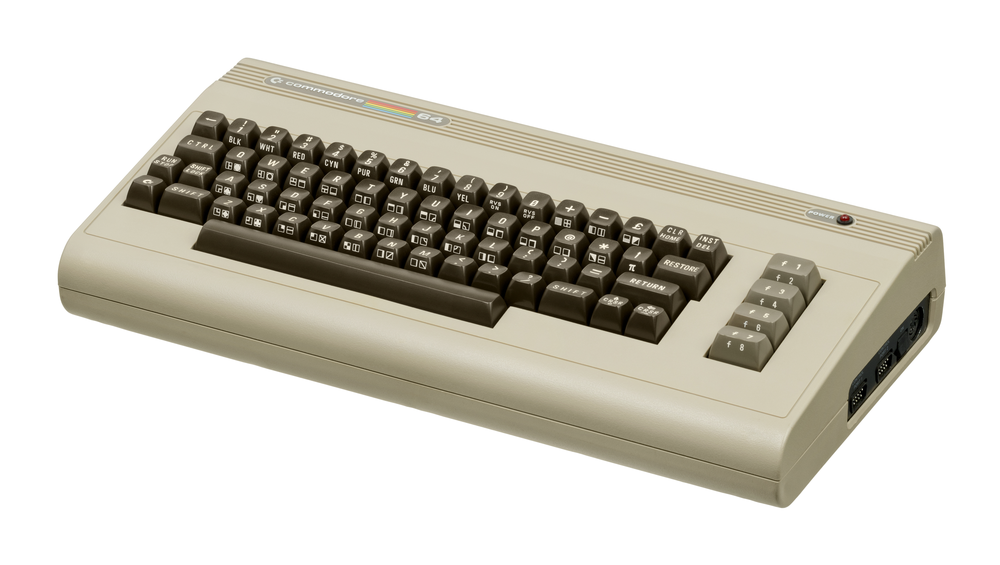

Released in 1982, the Commodore 64 (C64) brought computing to the masses, boasting an affordable price, robust sound and graphics, and an eventual library of over 10,000 software titles. By dominating the low-end home computer market and entering millions of living rooms, it shaped an entire generation of programmers and gamers.